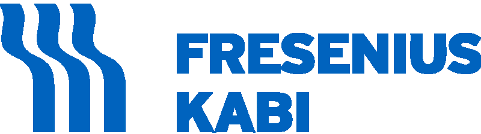

IX межрегиональная конференция РДО
для Дальневосточного Федерального Округа
24 - 25 сентября 2021, г.Хабаровск
Регистрация
Программа конференции
ВНИМАНИЕ! В программе указано местное время в Хабаровске! (в Москве минус 7 часов).
* мероприятие пройдет в виде серии онлайн-вебинаров
Целевая аудитория
Целевая аудитория: нефрологи, терапевты, общая врачебная практика, семейная медицина.Документация
Документация по учебному мероприятию представлена в Комиссию по оценке учебных мероприятий и материалов для НМО. Коммерческая и некоммерческая часть мероприятия будут разделены перерывами, баллы за коммерческие доклады не начисляются.Участие в конференции
Стоимость участия в конференции: бесплатно.Регистрация ОБЯЗАТЕЛЬНА! Сразу после регистрации Вам на электронную почту должно прийти письмо-подтверждение, что регистрация пройдена. Без этого письма регистрация считается незавершенной. Если ссылка не пришла, вследствие того, что Вы отписались от нашей рассылки, введите Ваш электронный адрес в меню «Рассылки», которое находится в правом верхнем углу Вашего личного кабинета и нажмите «Подписаться» или свяжитесь с секретариатом РДО (rosdialysis@mail.ru) так как это не единственная причина, по которой ссылка может не прийти. Контактный телефон для связи работает в рабочие дни с 09:00 до 18:00 часов по московскому времени. Убедительная просьба обращать внимание на разницу во времени!
После достижения лимита подключений регистрация будет автоматически заблокирована.
Дата блокировки регистрации — следите за информацией!
Дата открытия регистрации: 23 августа 2021г.
Уважаемые участники!
Начисление баллов НМО по окончании мероприятия будет осуществляться ТОЛЬКО в случае выполнения ряда условий. Во время онлайн-трансляции будет проводиться подсчет продолжительности времени подключения каждого слушателя и контроль Вашего присутствия на мероприятии. Проверки будут осуществляться хаотично, без определенного интервала времени. При соблюдении длительности просмотра и положительном прохождении контроля присутствия, в течение 10 дней после окончания конференции, Вы получите индивидуальный код подтверждения (ИКП) для начисления баллов. Обращаем Ваше внимание, что в соответствии с требованиями НМО к проведению онлайн-мероприятий, по каждому участнику (согласно присвоенную токену) собирается индивидуальная информация о контролях, а именно — в какое конкретное время было совершено каждое подтверждение, кроме того все окна подтверждений имеют свой уникальный номер, что отражается в отчетах.
Минимально допустимое время присутствия для начисления баллов за участие в данном мероприятии составляет:
24.09.2021 (1 День) - 270 минут, минимальное время подключения (без учета перерывов),
25.09.2021 (2 День) - 300 минут, минимальное время подключения (без учета перерывов).
Для контроля Вашего присутствия на мероприятии во время проведения онлайн-трансляции необходимо будет подтвердить:
24.09.2021 (1 День) - всего 8 контролей, минимум подтвердить 6,
29.05.2021 (2 День) - всего 8 контролей, минимум подтвердить 6.
За несколько дней до начала конференции, ТОЛЬКО зарегистрированным и получившим письмо с подтверждением регистрации участникам будет отправлена индивидуальная ссылка для входа. Если ссылка не пришла, вследствие того, что Вы отписались от нашей рассылки, введите Ваш электронный адрес в меню "Рассылки", которое находится в правом верхнем углу Вашего личного кабинета и нажмите "Подписаться" или свяжитесь с секретариатом РДО (rosdialysis@mail.ru) так как это не единственная причина, по которой ссылка может не прийти. Контактный телефон для связи работает в рабочие дни с 09:00 до 18:00 часов по московскому времени. Убедительная просьба обращать внимание на разницу во времени!
Дата отправки ссылок для входа на конференцию:
20 сентября 07:00 по московскому времени
Повторные отправки:
23 сентября 07:00 по московскому времени
24 сентября 07:00 по московскому времени
25 сентября 07:00 по московскому времени
Мероприятие соответствует требованиям НМО.
24 сентября - 6 кредитов,
25 сентября - 4 кредита.
Технические требования и порядок подключения
- Поддержка браузеров: InternetExplorer 9, 10, 11 (32-bit и 64-bit), MozillaFirefox , GoogleChrome, YandexBrowser, Microsoft Edge и Safari.
- Вход доступен при наличии доступа к сети Интернет, минимальная скорость интернета должна быть 5Мб/с.
- Вход на вебинар может осуществляться участниками по индивидуальной ссылке из приглашения от РДО, которое должно приходить участнику по электронной почте.
- Приглашение содержит информацию о конференции: тема, время проведения, участники и т.п., а также индивидуальную ссылку для входа на конференцию.
- Вход на вебинар может осуществляться участниками в назначенное время по индивидуальной ссылке от РДО, после регистрации на сайте РДО.
- Ссылка будет действительна только на 1 экране (вкладке). Если Вы зайдете по индивидуальной ссылке повторно - будет автоматически происходить выход из конференции на других вкладках/браузерах/ПК.
- Возможность подключения к конференции без наличия у участников микрофона и WEB-камеры (режим Слушатель).
- Возможность настройки персонального аудио и видео оборудования, как до начала, так и во время конференции по телефону технической поддержки или в чате на странице конференции.
Техническая поддержка:
+7 925 129-61-99
Техподдержка начнет работу с 24 сентября 2021 года (8:00 - 14:30, по московскому времени)
Сотрудники технической поддержки не отвечают на вопросы о рассылке участникам
ссылок для входа на конференцию и получению ИКП.
Данную информацию необходимо уточнять в оргкомитете РДО rosdialysis@mail.ru
Оргкомитет конференции
Захарова
Елена
Викторовна
Елена
Викторовна
Председатель РДО, к.м.н., доцент кафедры нефрологии и гемодиализа ГБОУЗ РМАНПО, доцент кафедры нефрологии ФДПО ФГБОУ ВО МГМСУ им А.И. Евдокимова, зав.отделением нефрологии ГБУЗ «Городская клиническая больница имени С.П. Боткина», г. Москва
Вишневский
Константин
Александрович
Константин
Александрович
Зам.председателя РДО, к.м.н., заведующий отделением хронического гемодиализа Санкт-Петербургское ГБУЗ «Городская больница №15», г. Санкт-Петербург
Бевзенко
Андрей
Юрьевич
Андрей
Юрьевич
Главный нефролог ДФО, член Президиума Профильной Комиссии по нефрологии МЗ РФ, координатор от РДО по Дальнему Востоку, главный врач диализных центров Б.Браун в Хабаровске и Комсомольске-на-Амуре, г.Хабаровск
Спикеры
Андрусев
Антон
Михайлович
Антон
Михайлович
Медицинский руководитель направления Хронический диализ, Россия и СНГ, АО Компания «Бакстер», к.м.н. Доцент кафедры нефрологии ФПДО МГМСУ им. А.И. Евдокимова, г.Москва
Бобкова
Ирина
Николаевна
Ирина
Николаевна
д.м.н., профессор кафедры терапии внутренних и профессиональных болезней МПФ, главный научный сотрудник НИО "Здоровьесберегающие технологии" ФГАОУ ВО Первый МГМУим. И.М.Сеченова (Сеченовский Университет), г.Москва
Воробьева
Ольга
Алексеевна
Ольга
Алексеевна
к. м. н. , заведующая Отделением нефропатологии и сложного морфологического диагноза ООО "Национальный Центр Клинической Морфологической Диагностики" ("НЦКМД"), г.Санкт-Петербург
Есаян
Ашот
Мовсесович
Ашот
Мовсесович
доктор медицинских наук, профессор, заведующий кафедрой нефрологии и диализа ФПО ПСПбГМУ им. акад. И.П. Павлова, г.Санкт-Петербург
Зелтынь-Абрамов
Евгений
Мартынович
Евгений
Мартынович
д.м.н., профессор кафедры общей терапии ФДПО ФГАОУ ВО РНИМУ им Н.И. Пирогова, врач-кардиолог ГБУЗ ГКБ №52 ДЗМ, г.Москва
Козловская
Наталья
Львовна
Наталья
Львовна
д.м.н., руководитель центра помощи беременным с патологией почек ГКБ им. А.К.Ерамишанцева ДЗМ, профессор кафедры внутренних болезней им. академика В.С. Моисеева РУДН, г.Москва

Румянцев
Александр
Шаликович
Александр
Шаликович
д.м.н., профессор, профессор кафедры факультетской терапии Санкт-Петербургского государственного университета, профессор кафедры пропедевтики внутренних болезней Первого Санкт-Петербургского государственного медицинского университета, г.Санкт-Петербург
Томилина
Наталья
Аркадьевна
Наталья
Аркадьевна
д.м.н., профессор, зав.кафедрой нефрологии ФГБОУ ВО МГМСУ им. А.И. Евдокимова, г. Москва

Шило
Валерий
Юрьевич
Валерий
Юрьевич
к.м.н., доцент кафедры нефрологии ФДПО ФГБОУ ВО МГМСУ им. А.И. Евдокимова, медицинский директор сети клиник Б. Браун в РФ, г.Москва
Шилов
Евгений
Михайлович
Евгений
Михайлович
д.м.н., профессор кафедры внутренних, профессиональных болезней и ревматологии ФГАОУ ВО Первый МГМУ им И.М. Сеченова Минздрава России (Сеченовский Университет), г.Москва
Шутов
Евгений
Викторович
Евгений
Викторович
руководитель Межокружного нефрологического центра ГБУЗ ГКБ им. С.П. Боткина, д.м.н., профессор, вице-президент Столичной ассоциации врачей нефрологов, г.Москва
Водорезова Анна Викторовна
Алпацкая Татьяна Николаевна
Зиновьева Надежда Александровна
Спонсоры
Основные спонсоры


Информационный спонсор